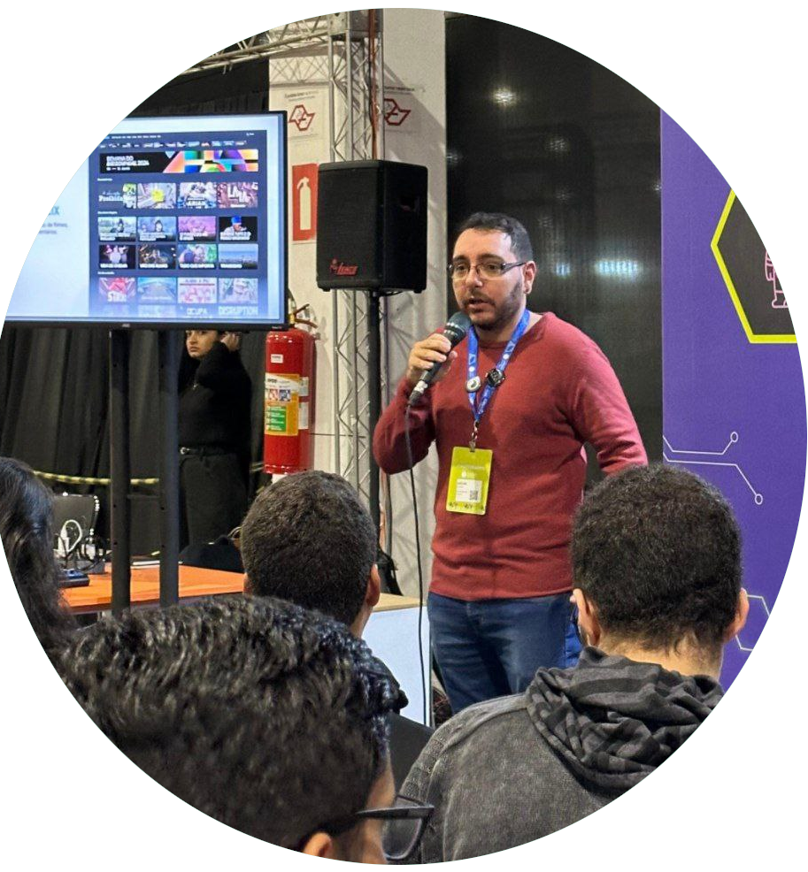

Curso Básico de Vim
Aumente sua produtividade no Linux.
Assistir Curso

Curso Básico de GIMP
Aprenda a usar o GIMP, o editor de imagens livre.
Assistir Curso
O Renascimento do RSS na Internet
Se você sente que seu feed de notícias é controlado por algoritmos que decidem o que você deve ver, está na hora de redescobrir o RSS.
Ler Artigo
Distribuições Linux Brasileiras que Deixaram Saudade
O Brasil tem uma história rica no cenário do software livre, marcada por distribuição Linux brasileira que buscaram adaptar o sistema às necessidades e à cultura local.
Ler Artigo
Dominando as variáveis: aplicações em Python e Shell Script
Entenda o que é uma variável na programação e os tipos de dados: Int, Float, String, Boolean e Char.
Ler Artigo